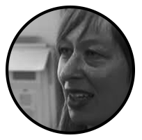

art
technology
Luna Maurer
13 Março - DARQ

Runs
the Amsterdam-based design studio Moniker with Roel Wouters. (They founded it in 2012 with Jonathan Puckey.) Moniker “explores the characteristics of technology,
how people use it, and how it influences people’s daily lives. "They’ve taught media courses at the Gerrit Rietveld Academy, the Sandberg Institute and at Yale
University, and they regularly give workshops and lectures around the world. Moniker, together with Edo Paulus, wrote Conditional Design, a manifesto and
“experimental playground” that they have said is “based on the notion that designing a logic-based environment within which results take shape are more interesting
and fruitful than a directly designed object.” They tested these ideas during weekly workshops, which were then posted online. The Conditional Design Workbook was
published in 2013 by Valiz. Here, Maurer discusses what it means to break down complicated ideas, the importance of having a guiding manifesto, and the difference
(or lack thereof) between an artist and a designer.